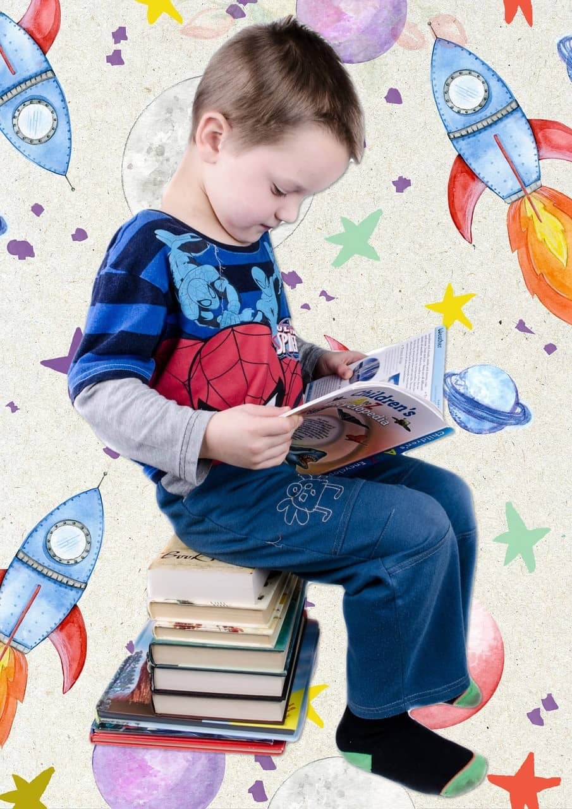
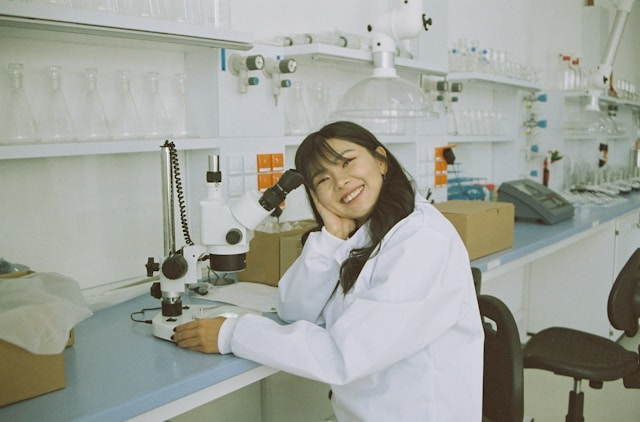

"Explore together"
Come join us at the Community Science Museum where we’re committed to making science accessible to all.
Over the course of human history, science has developed from our early understanding of fire, wind, water,
and earth to exploring everything from galaxies far away to the very building blocks of life itself.
The aim of our museum is to create a space where everyone can experience the wonders of our discoveries
and perhaps even ignite a lifelong passion to continue the exploration of the world around us.
We believe science should not be confined to the textbook, but brought to live through exhibits.
This is why we have over 1000 different exhibits on the many varied subjects of science to explore.
Many of these exhibits are designed for you to interact with and play around to see science come to life
(apart from the dinosaur exhibits – they only come to life at night when everyone’s gone home).
Visit the Museum
More info
Get Involved
Support
There are various ways you can support the museum.
Donations are very welcome and are an important way we keep this museum open and accessible to the whole community.
You can also support us by donating items of interest to the museum’s collections. If you have some item or collection
that you think others would enjoy, please let us know by contacting our Collections Department and they will be able to assist you.

Volunteer
A number of people volunteer their time and effort to keep the displays in good order and ready for visitors
to come and enjoy. Volunteering has its perks including getting to see behind the scenes of a working museum,
access to staff-only lectures, and a monthly lunch where all staff and volunteers come together to discuss
ideas for future exhibits and strategies for the museum
You can help volunteer in a number of different spheres.
Please contact us if you’d like to find out more about how you can get involved
Internships
Are you interested in working in a museum? Do you enjoy the fun and excitement of sharing the wonders of nature with people?
Well you could be just the right person to enjoy an internship at the museum.
You’ll be learning from a number of different academics and people who are passionate about science and sharing it with the wider community.
